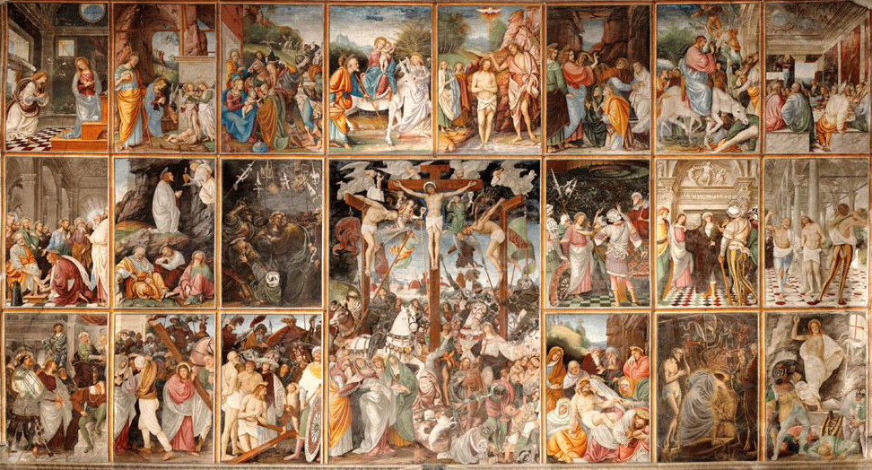

Jesus of Nazareth
Son of Man
Major events in Christ's life:
- Circa 5 BC - Born in Bethlehem to Mary and Joseph (who traveled there to register in a census).
- Circa 8 AD - Replies "Didn't you know I had to be in my Father's house?" when asked about his absence after separating from his family and talking to teachers in Jerusalem.
- Circa 28 AD - Baptised by his relative, John, on the eastern bank of the Jordan river at Bethany; fasts for 40 days in the desert and is tempted by the devil
- Circa 28 AD - Recruits his first disciples, Andrew and Simon (that is Peter), and turns water into wine.
- Circa 28 AD – 30 AD - Is followed by massive crowds of people seeking to be healed by him.
- Circa 30 AD, Spring - Travels to Jerusalem for Passover. Overthrows tables in the temple and condemns judaic leaders' hypocrisy. Betrayed by Judas.
- Circa 30 AD, Spring - Eats last supper. Prays in the garden of Gethsemane. Arrested by a crowd send from the chief priest and the elders of Israel.
- Circa 30 AD, Spring - Is accused of blasphemy by the Sanhedrin; sent to the Roman governor who gives the Isralites the choice to save either Jesus the Messiah or Jesus Barabbas; flogged and handed over to the Isralites to be crucified.
- Circa 30 AD, Good Friday through Easter - Crucified, resurrected, risen.
"For God so loved the world that he gave his one and only Son, that whoever believes in him shall not perish but have eternal life."
— John the Apostle